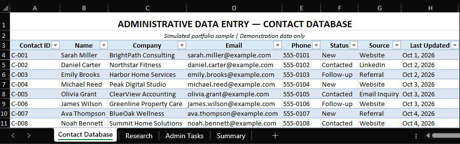
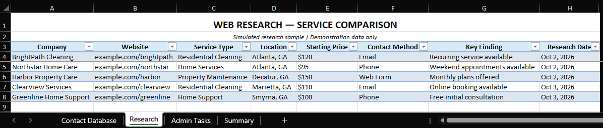
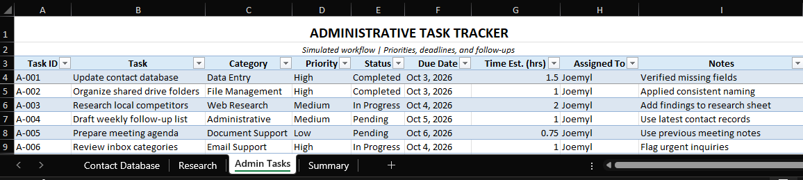
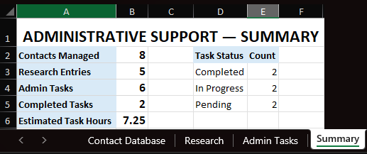
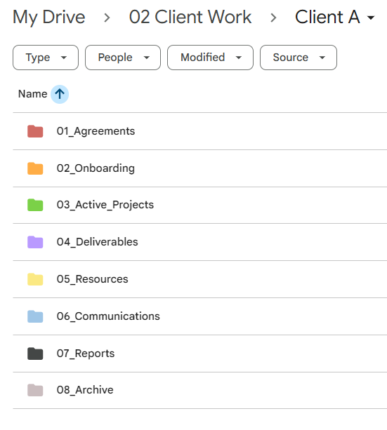
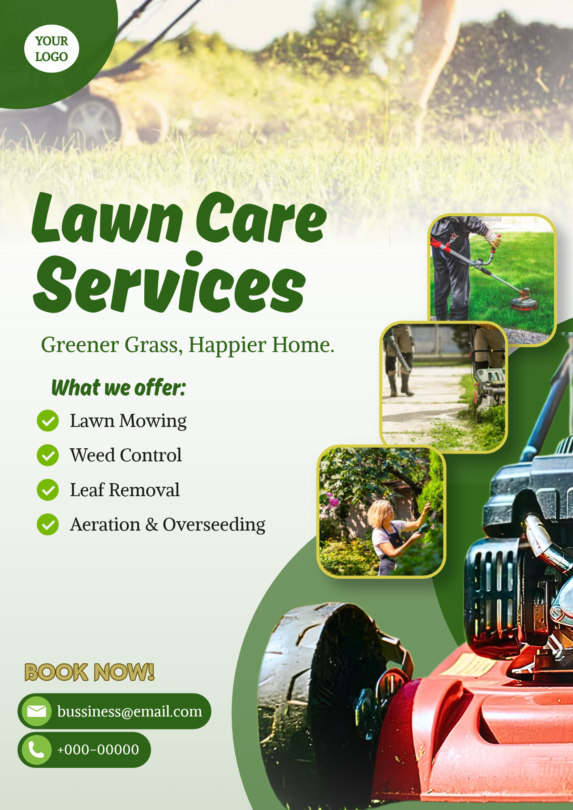

Excel Administrative & Data Entry
A simulated Excel workflow demonstrating data organization, data entry, web research, task tracking, and basic reporting.
A LITTLE ABOUT ME
I’m Joemyl Sanchez, an aspiring Virtual Assistant with a background in Computer Engineering and IT support. I’m interested in helping businesses stay organized, manage information, support daily operations, and learn the tools needed to work efficiently.
RESUME / CV
View ResumeWORK SETUP
A FEW PRACTICE PROJECTS
Selected examples of organization and visual content design.




A simulated Excel workflow demonstrating data organization, data entry, web research, task tracking, and basic reporting.

A sample file organization setup demonstrating folder structure and document organization.

Two sample social media designs created to demonstrate basic visual content design, layout, and presentation.
LET’S CONNECT